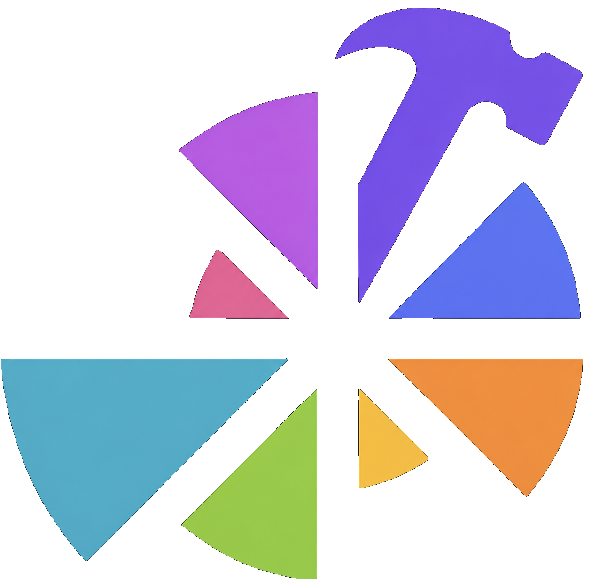

Depictio ools Catalog
The catalog turns a bioinformatics tool's outputs into ready-made dashboard components. Point Depictio at a pipeline run and every output it recognises becomes a render — no manual wiring.
Tool
The upstream software — ivar, qiime2, mosdepth, nextclade, metaphlan, pangolin… and any tool not yet integrated (freebayes, bakta, gtdb-tk, abricate). One Tool = one catalog entry.
Data Collection
A file the tool emits — recognised and reshaped into a tidy, bindable table.
Render
A dashboard component bound to that data — figure, card, table, interactive filter, advanced viz, or MultiQC section.
Browse the catalog below: filter by component type or viz kind, preview each
render on real fixture data, and copy its use: snippet.
How a render is defined¶
Every render follows the same path — from a raw file on disk to a live dashboard component:
Detect — find
Recognise which file in a run is this tool's output, by filename or path pattern.
Reshape — recipe optional
Transform the raw file into tidy, bindable columns → the Data Collection. Already-tidy files skip this.
Render — renders
Bind those columns to a dashboard component — figure, card, table, interactive filter, advanced viz, or MultiQC section.
Validated bindings
Each Data Collection's column schema lives in exactly one place (the recipe), and CI validates every render binding against the real reshaped columns — so a tool that ships green is wired correctly, with no manual review.
For the configuration reference of each component type, see the Dashboard Components guide.
Contribute a tool¶
Adding a tool is a single-folder pull request under depictio/catalog/<tool>/
— no Depictio internals to learn, and no Python unless an output needs reshaping.
Three co-located files:
module.yaml
The tool's identity — id, display name, and a pointer to an upstream source (an nf-core module today; other catalogs later). Identity fields like homepage, bio.tools, and EDAM terms are derived from that source rather than duplicated.
<output>.yaml one per file
find the raw file, optionally recipe it into tidy columns, and list the renders_as it offers — figure, card, table, interactive filter, advanced viz, or MultiQC section.
<output>.tsv fixture
A small sample of that file, right beside its YAML, so depictio catalog validate previews and checks every render in CI before it ships.